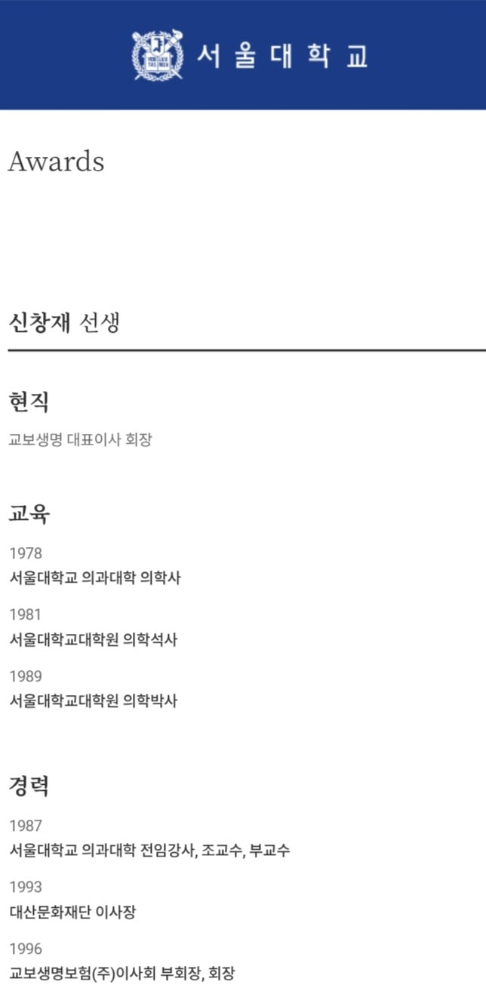
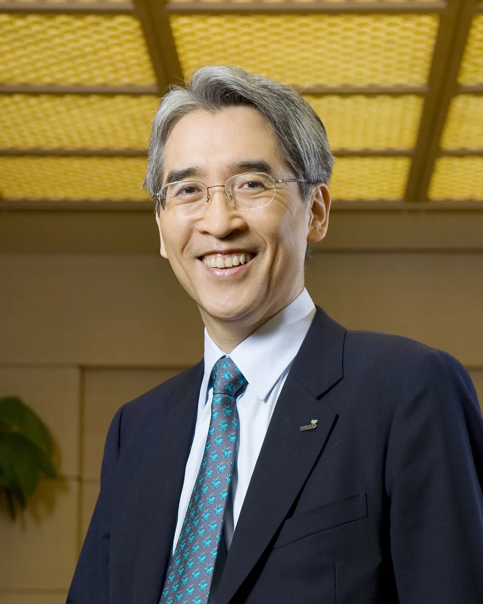

신창재
前) 서울대학교 의과대학 산과 부교수
(내분비 및 불임(시험관아기) 전공)
現) 교보생명그룹 회장


신창재
前) 서울대학교 의과대학 산과 부교수
(내분비 및 불임(시험관아기) 전공)
現) 교보생명그룹 회장
재벌 정상화는 역시
그냥 의학좋아 재벌 아니셨을까
신 창 재
신 창 잽
본인만 생각있다면 병원 하나를 세울 사람이라 ㅋㅋ
두산도 형제끼리 돌아가면서 회장할때 서울의대 출신 간담췌외과 교수도 맡았었음ㅋㅋㅋ 그분도 그분야 레전드
박용현 서울대병원장
교보잖아
교육보험 이름값 하시네요 ㄷㄷ
재벌그룹 정상화는 역시 신 창 재
지능이 부럽다
난 아무리 노력해도 전교 20등안에는 못들어가겠던데
꽤 높네
전교생 18명
???: 해봤는데 정교수 할 정도로 재미는 없더라고 ㅋㅋ
서울대 학 석 박 트리플도 레전드네
개십고수ㄷㄷㄷ
불임난임 정상화는 신 창 재
교보 두산 이쪽은 공부머리가 좋은거같더라
예전에 하버드 나와서 카이스트 최연소 교수 하신 분도
교보쪽이었음
집안에서 대학병원 하나 차려준줄